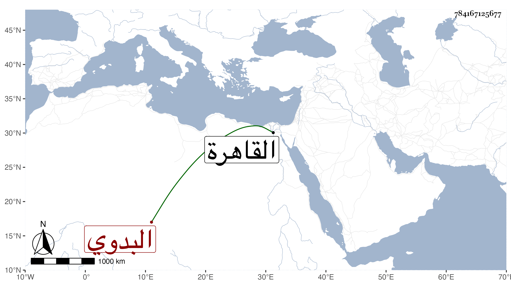

0902Sakhawi.DawLamic.ITO20230111-ara1.EIS1600.784167125677
Biography ID: 784167125677
579
فصل البدوي . أحد الخارجين عن الطاعة القائمين بقطع الطرق وإخافة السبل مع شجاعته وشدة بأسه حتى أنه كان يجيء إلى البلد الكبير نهارا فينزل خارجها ويرسل قاصده إلى أهلها يعلمه بأنه قرر عليهم كذا وكذا فلا يسعهم إلا إرساله ومتى تخلفوا طرقهم بعد ذلك وأخذ منهم ما شاء فأقام على هذا مدة وأعيا الحكام أمره إلى أن قدم بنفسه إلى السلطان تائبا فأمنه وأقام بالقاهرة أياما فكان إذا مشى في طرقها تكثر العامة النظر إليه والتفرج عليه ويكثر هو التعجب من صنيعهم والضحك عليهم في ذلك ثم توجه إلى بلاده فأقام على التوبة أشهرا ثم بلغ الزين الاستادار أنه نقضها وأنه يتخطف لكن سرا فاحتال حتى استقدمه بالأمان وطلع به إلى السلطان ومعه ابن عم له في يوم الأحد تاسع شعبان سنة ثمان وخمسين فأمر بضربهما بالمقارع وتسميرهما وسلخهما بعد ذلك وحشو جلدهما ففعل بهما ذلك كله وطيف بهما الشرقية مستراح منهما .
